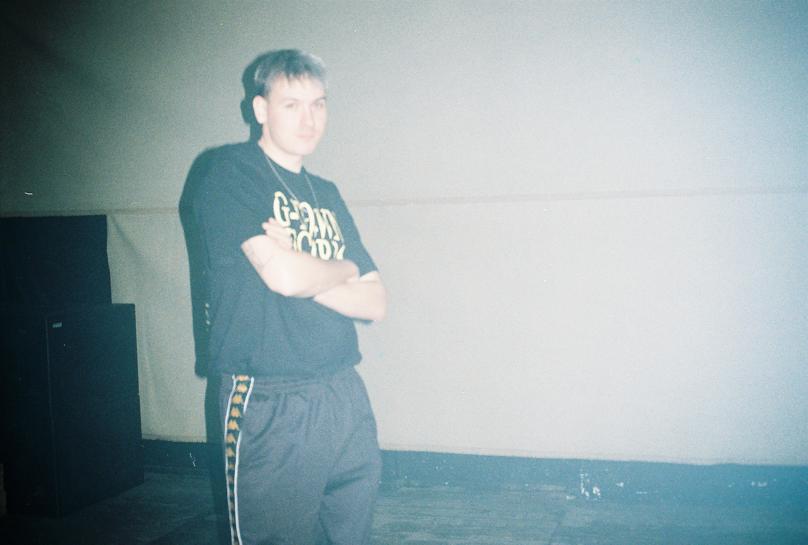

DJs:

DJ SONIC 3000
DJ SONIC 3000, blending wavy beats with retro vibes.
This house & groove enthusiast will take you on a ride with heavy bass lines and melodic piano
accents.
Sometimes he is our photographer.

Dolam
Dolam brings to the table dark shivering soundscape clouds pierced by soothing
rays of hopeful tunes taking her listeners to mesmerizing journey right to the eye of emotional
storm.
DR.XANDO
This nutcase will bring your energy levels to 11/10 in minutes. With high high
command of the decks and musical past, DR.XANDO is able to play and match just about every track. He
prefers the groove ones.
HEXE
Acid sounds hit closest to home for HEXE, however her eclectic approach to
mixing allows her to hypnotise her audience under the dancing spell.

Ninsei
Ninsei loves to play on your heartstrings to the rhythm of soft trance sounds.
She finds herself comfortable in tempo-rising, nostalgia-inducing, melting mixes.

scyntero
The initiator, CEO and a wizard of sorts. Scyntero’s sound is diversified, with
house and techno being in the forefront. No BPM range is out of question for him.
Art:

@kamilkowal_
The graphic mind behind Project Echo. Often displaying VJ shows simultaneously
to our musical acts. Takes care of all graphic material required. He even made this website.